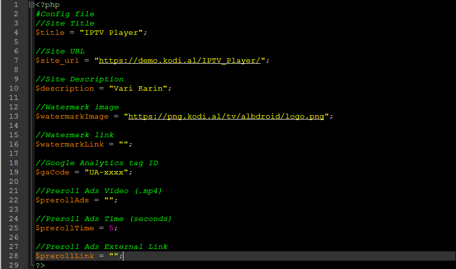

IPTV is a Responsive IPTV Video Streaming Script. It has a nice and attractive front end interface that is really appealing. It was developed as web player for various IPTV services worldwide. Majority of IPTV service don't have web based player, so this script simlifies the task of watching your IPTV on the go.
This script is built using the procedural php and without any framework. For this reason it can be customized easily by any developer. Money can be made from preroll ads system (like youtube).
This script is very light weight and sie up to 3mb only. It doesn't require any database connection and can be setup on a free shared server too.
IPTV script has the following features:
